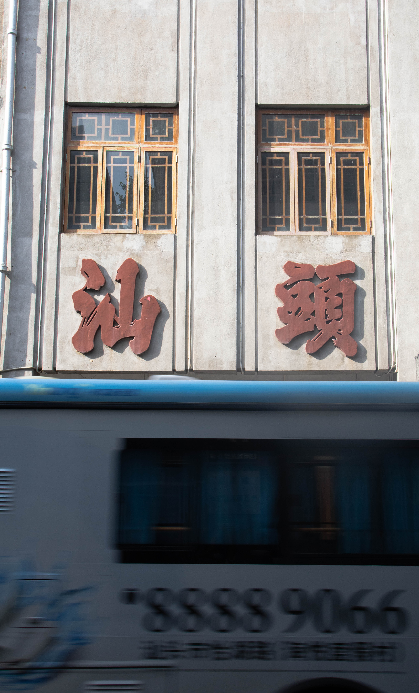
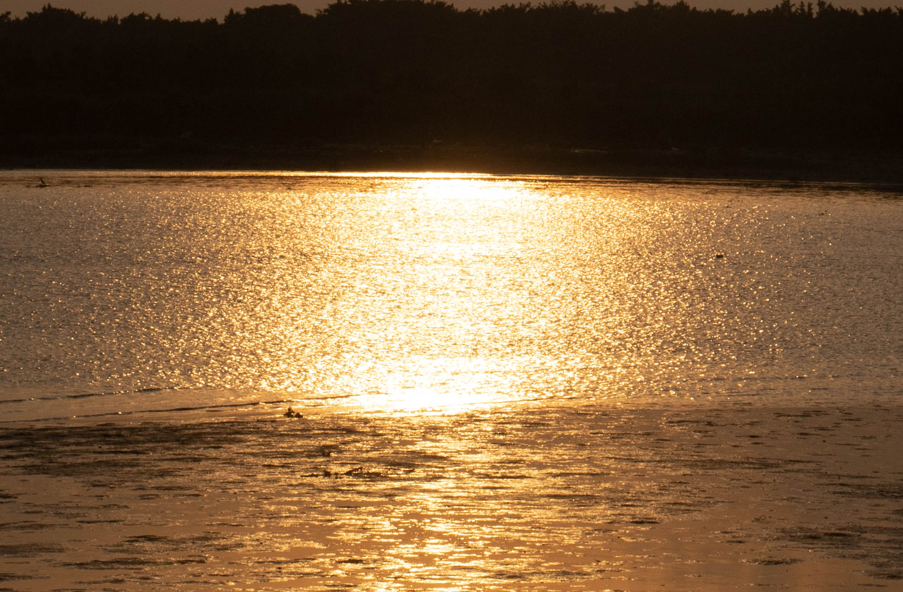
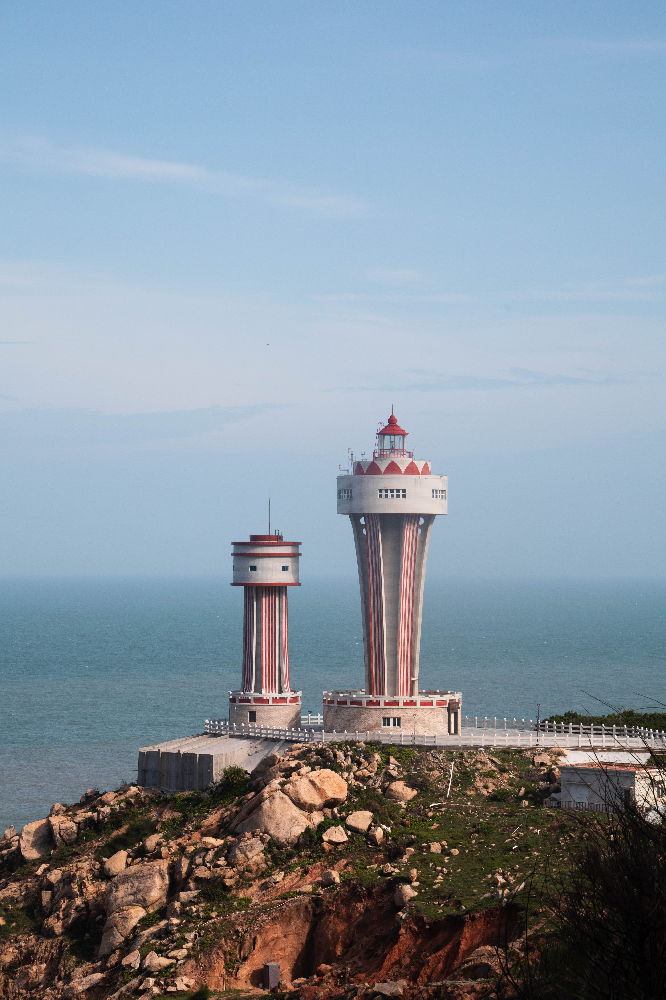
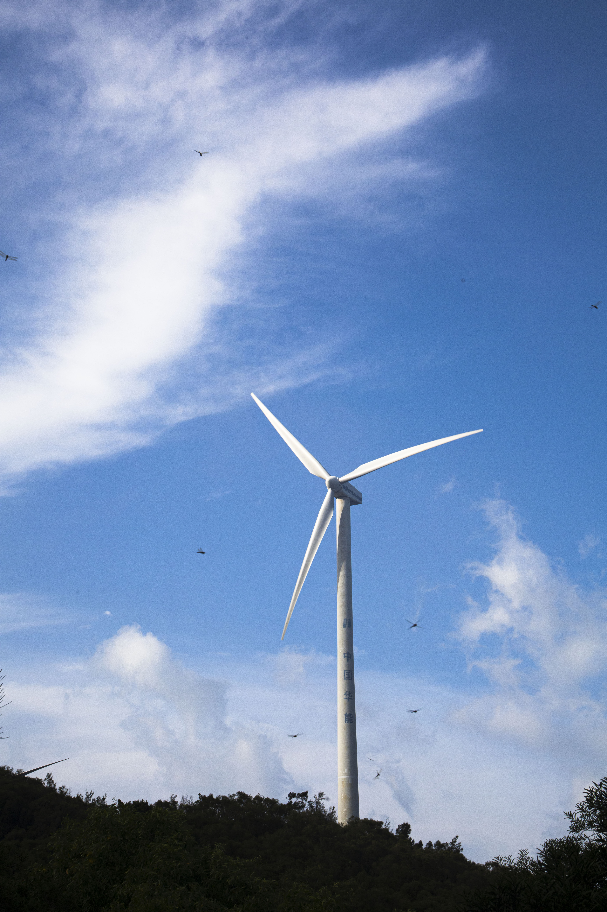

2021年8月8日 / 11 阅读 / 0 评论 / 6 点赞
汕头，简称“汕”，广东省辖地级市，潮汕四市之一 [1-5] ，汕潮揭都市圈城市，
经济特区，[6] 位于韩江三角洲南端，北接潮州，西邻揭阳，南濒南海，与台湾隔海相望，
境内韩江、榕江、练江三江入海，是中国大陆唯一拥有内海湾的城市。 [7-8] 全市下辖
6个区、1个县，总面积2199平方千米，根据第七次人口普查数据，截至2020年11月1日零时，
汕头常住人口为550.2031万人。
我们这次旅行的目的地是南澳岛，本来我们出发的时候还是好天气，可是天公不作美，
在我们到达南澳岛后就下起了大雨，原本以为我们的旅行只能以遗憾告别汕头，但是在我们
的等待下还是等来了汕头之行里最美的照片，我也感叹南澳岛上的风力发电资源如此丰富，
那一台台风力发电机走进看时我们是有多么的渺小。



